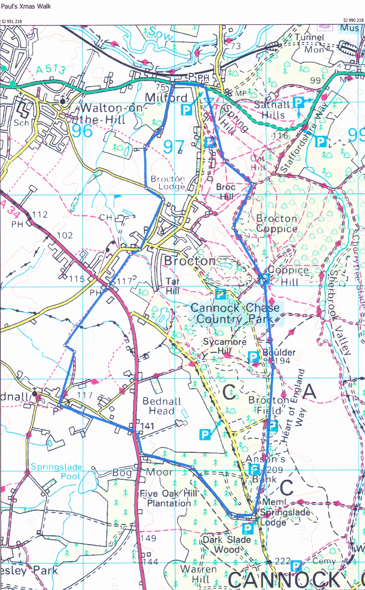
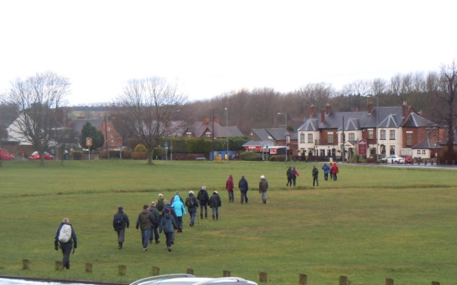

Xmas Squalk – 30 December 2013
| Once again for a
Hecky Thump trek across Cannock Chase the weather forecast was not
looking good, with heavy rain and gale force winds forecast. The day did not get off to a good start with Pedro turning up at the crack of dawn, all kitted up and booted but unfortunately had to pass on his apologies, as his wife had fallen at home............. Next to fall by the wayside was Mrs Hecky Thump who reported to Hecky Thump at 7.15 that a few lemsips would be required before she would be able to make it to the Chetwynd Arms for lunch and the walk was not a sensible thing to be doing, but a good pub lunch was just the remedy for a heavy cold and she would be at the pub ready for lunch. This still left around 25 up for it (of which only 2 being in the gameful employment of the City Council). |
 |
The minibus set off from the Westbury Tavern at 7.30 picking up Debbie, Dasher and Benson on the way to meet up with the rest at the Chetwynd Arms at Brocton; half the group meeting in the rear car park and half meeting at the front door expecting early morning refreshments. Once there was a realisation there were no early morning drinkees, Hecky Thump led the way at the allotted time of 8.30 across open fields directly into the westerly wind, which more than blew the Christmas cobwebs away.
At one point the field ahead was not dissimilar to the fields of the Somme. At this point questions were coming from the ranks as to wether the walk could be skipped and could a short cut be found to the breakfast stop. Not to be put off, Hecky led the group and ploughed on through the mud to the village of Bednall where firmer footing was found.
From here the going got better and the Chase was soon entered. Not shortly afterwards the smell of a wood fire and freshly cooked bacon could be smelt wafting through the trees. This put a spring in everybodys step, so much that the leading group walked straight past the entrance to the cafe. Once again the Springslade Lodge Cafe was welcoming with an open fire on the go and plenty of bacon and sausage sandwiches to replenish the troops.
All too shortly Hecky Thump decided that we needed to start making our way to the Barley Mow at Milford Common for lunch time drinks
Once again the elements were faced but knowing that only an hour away was the rest and comfort of the Barley Mow.
Fortunately the weather held up and the views from across the Chase over Sherbook Valley were well worth the early morning start.
Even though Mrs Hecky Thump was still in the comfort of her own lounge she still got the blame as Hecky Thump took the wrong path on the way down to Milford Common.
There were fears that a steep hill would have to be negotiated, but Hecky Thump knowing the Chase like the back of his hand (allegedly) circuited the hill and fortunately no drinking time was lost.

The welcome site of the Barley Mow soon came into view at Milford Common
 |
 |
|
A very pleasant hour was had in the Barley Mow and by the time it was time to depart the sun was shining and Heavy Steve's wallet was empty. The last stretch of the walk back to Brocton took us past the house where the former Governor General of Gibraltar was shot by the IRA back in 1990, before passing Milford Hall Cricket Club; one of the most picturesque cricket grounds in Staffordshire, and then past Brocton Hall Golf Club. |
||
 |
 |
|
| Bang on time we were back at the Chetwynd Arms to enjoy lunch and a few well earned drinks. As per usual Roadrunner's meal was served last. The trout must have been difficult to catch. After being well fed and watered it was back on the mini bus back to the Westbury Tavern at 4.30, the end of another annual Xmas Squalk.
Notes by Hecky Thump
(Many thanks Paul) |
 |
|